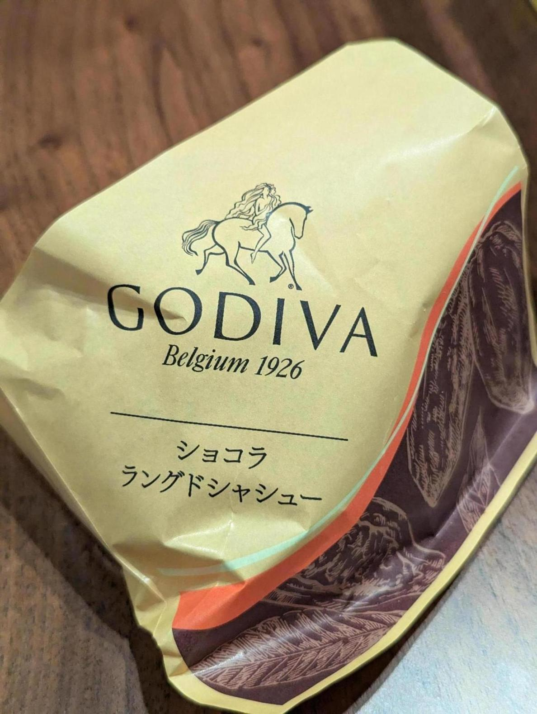

ビアードパパの10月限定のシュークリーム買ってきた！ゴディバのショコララングドシャシュー。めっちゃ美味い。
ビアードパパの期間限定シューは、どれも美味いんだけど、基本的に必ず「普通のカスタードシュークリームのほうが美味いな」となる。カスタードがうますぎるから。でも今回のゴディバは、カスタードと引けを取らないと感じた。めっちゃ美味い。
ゴディバって昔と販売戦略が変わってるような感じがする。昔は高級チョコの代名詞で、バレンタインにだけ食べられるものという感じだったと思う。今はカフェっぽくなっていたり、こうしたコラボもよくやっていて、マーケティング担当者が変わった感じがする。昔のイメージもまだ割とあるので、うまいことやっている印象。
あと、モニターが壊れた。LGの43UN700、41.5インチ。映るは映るのだが、画面の概ね右半分がかなり暗い。どうして、、 Amazonの購入履歴で調べたら、購入からほぼちょうど4年経過していた。考えてみると、モニターって落としたりぶつけたりして派手に壊すか、何らかの理由で売ったりして処分することが多いイメージだ。寿命的に壊れたのは初めて見たかもしれない。4年というと決してめちゃくちゃ長いこともったなというわけではないだろうが、そんなもんと言えばそんなもんな気もする。
今引っ越しも考えてるし、冷蔵庫もいい加減一人暮らし用の上に電子レンジ乗せられるやつから買い替えたいので、出費が大きくなりそうだ。
なんかすごい日常っぽい日記になった。油断するとソフトウェアのことばかり書いてしまうので、日常を書いていきたい。